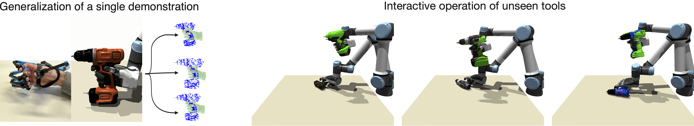

Abstract: Tool use, a hallmark feature of human intelligence, remains a challenging problem in robotics due the complex contacts and high-dimensional action space.
In this work, we present a novel method to enable reinforcement learning of tool use behaviors.
Our approach provides a scalable way to learn the operation of tools in a new category using only a single demonstration.
To this end, we propose a new method for generalizing grasping configurations of multi-fingered robotic hands to novel objects.
This is used to guide the policy search via favorable initializations and a shaped reward signal.
The learned policies solve complex tool use tasks and generalize to unseen tools at test time.
Overview
How can we guide our policy on the challenging task of interactive grasping and tool use with minimal supervision? We propose to use a grasping demonstration to guide the policy search and utilize non-rigid registration to transfer the demonstration to unseen instances.

Non-rigid Grasp-pose Transfer
The video below shows how a policy trained on a training object-set, guided by a single demonstration, is transferred to an unseen object in a zero-shot manner.
Sample Rollouts
The following rollouts show that the policy is able to solve the given tasks for a variety of tools.
The learned behaviors for the drive nail task while technically successful, do not resemble human-like operation of a hammer.
The agent pushes the nail in rather than hammering it in.
A more detailed reward function that enforces repeated hammer swings could produce more realistic behaviors.
Place mug
Position drill
Drive nail
Learned Behaviors
To illustrate the advantage of learning interactive policies for tool-use tasks, we highlight learned grasping behaviors of a hammer handle.
A round handle (left) is easy to grasp because it slides into the hand when closing the fingers.
Square handles (right), on the other hand, do not have this convenient property.
Instead, the policy learns to give the hammer an upwards momentum and quickly move the hand downward to catch the handle.
This behavior is then repeated if necessary.